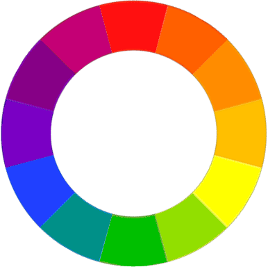
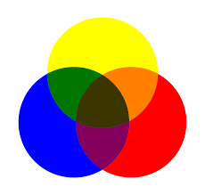
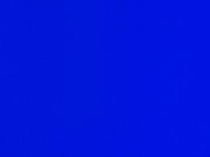
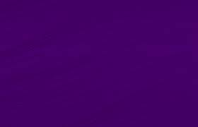
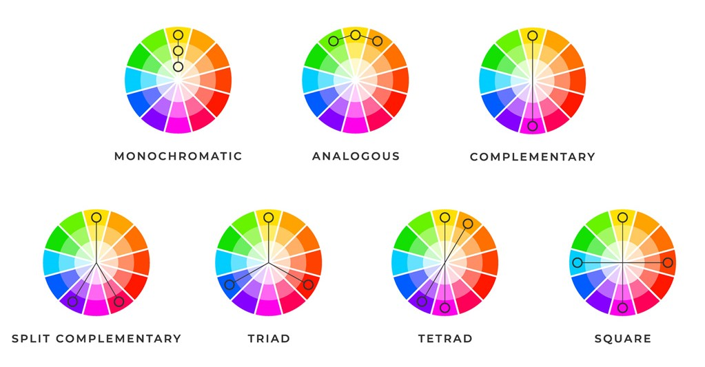
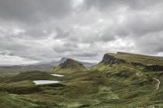
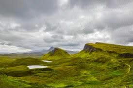

The color Wheel is a very important part of color theory. It was invented by Isaac Newton in 1666, and it’s just the color spectrum arranged on a circle. It shows the relationships between the different colors. It is used by artists and designers to decide which colors would look good together, which is called color harmony. By using color combinations, you can find color harmonies. Color combinations are determined by their relative positions in the color wheel to each other, and are used to find colors that look pleasant together. There are different types of color wheels for different mediums, for example printing uses CMYK, which uses the primary colors cyan, magenta, yellow, and black. The one shown below, however, is the RYB color wheel that most people learned about in school, which has red, yellow, and blue as primary colors.
Primary colors are situated a third of the wheel apart from each other on the wheel, so they are the same amount of distance apart. They are colors that cannot be mixed from other colors. For the RYB color wheel, they are red, yellow, and blue, and they are subtractive primary colors, meaning that they get darker when mixed together.
Secondary colors are colors that form when primary colors are mixed together. On the RGB color wheel, these would be orange, green, and purple.
Tertiary colors are made from mixing a primary and secondary color together. On the RGB color wheel, these colors would include teal, violet, and magenta.
Colors can be either warm or cool. The way colors are placed on the color wheel also indicate if they are a warm or a cool color. Warm colors are on one side of the color wheel while cool colors are on the other side. As you can see below, warm colors include red, orange and yellow, and cool colors include green, blue, and purple.
| Warm Colors | Cool Colors |
|---|---|
|
 |
Color Schemes are color combinations that look appealing together. Below are the seven main color schemes. 
Hue is the dominant color family of a color. It’s basically just pure color, and what we use the color wheel to choose. For example a hue would be green, without any shade, tone, or tint.
Saturation is essentially the intensity of a color. A color that has no saturation would be either black, grey, or white. Below is an example of different saturations. They are 2 of the same images, only the right one is more saturated than the left.
return to top of the page